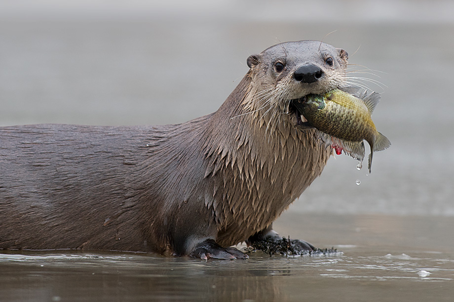
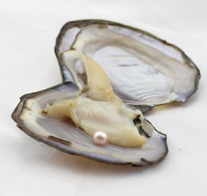
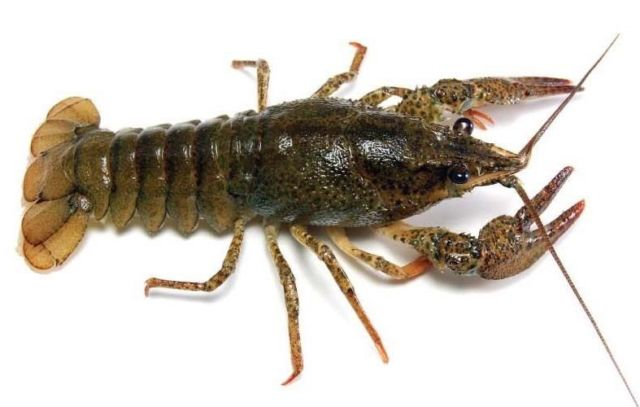
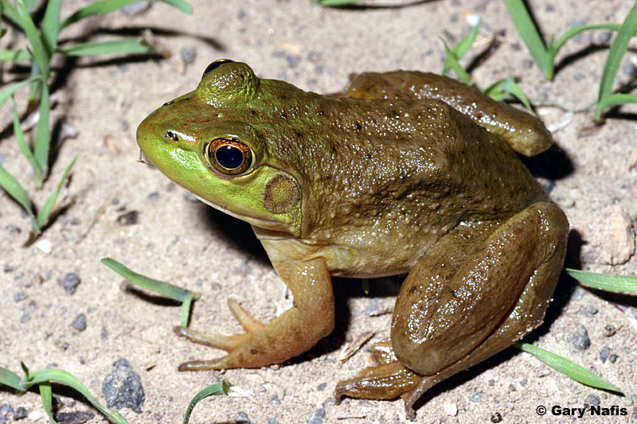

Otters spend nearly their whole lives hunting, they are meat eaters and have a diet that consists mostly of fish and invertebrates

Oysters are a major part of their diet:

As well as small crustaceans like crayfish:

SurprisingLy, they have been known to eat smaller animals such as frogs as well:

Helpful Links: